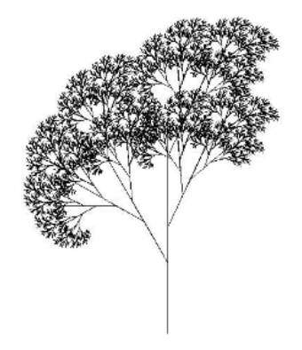
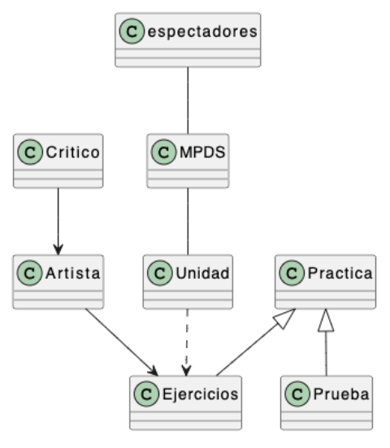
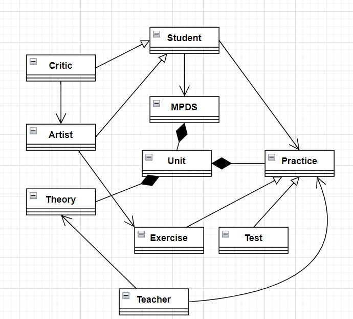

Ejercicio 1
Determina la corrección de los siguientes enunciados. En caso incorrecto, justifica la respuesta:
- "la identidad identifica al ente o a la entidad"
- "el identificador identifica al ente o entidad de cierta identidad"
- "la entidad del ente es el identificador de la identidad"
Respuesta
- Incorrecto: la identidad es identificada por un identificador.
- Correcto.
- Incorrecto: la entidad o ente tiene una identidad que es identificada por un identificador
Corrección
Escribe aquí la corrección
Ejercicio 2
Escribe 3 urls de 2 imágenes recursivas (no un seguimiento de una ejecución) y de 1 imagen que sí lo parece pero que no lo es.
Corrección
- La primera:
- La segunda:
- La que parece recursiva:
Ejercicio 3
Describe la imagen de la documentación de la unidad "Patrones" del "recu"-árbol del parque

Respuesta
Una línea recta con dos bifurcaciones: primero a la izquierda y después a la derecha. Cada una de las bifurcaciones es una linea recta sobre la que se repiten las dos bifurcaciones, de forma recursiva.
Corrección
Escribe aquí la corrección
Ejercicio 4
Describe la suma de dos números enteros positivos de forma recursiva
Respuesta
n=(n+1)
Corrección
Escribe aquí la corrección
Ejercicio 5
Critica el siguiente diagrama.

Respuesta
- Reemplazaría "espectadores" por "alumnos".
- Pondría la asociación entre "espectadores" y "MPDS" unidireccional: los espectadores ven (reciben el contenido de) el MPDS.
- El MPDS contiene unidades, y unidades contienen prácticas, y las prácticas son pruebas y ejercicios.
- Añadiría "Teoría" al contenido de las unidades.
- Espectadores heredarían características de críticos y de artistas.
- Los nombres se escriben en inglés, con la primera letra mayúscula, y en singular.
- Asociaría a los alumnos con las prácticas, que son quienes las ejecutan.
- Añadiría "Teacher", que imparte la teoría la práctica.

Corrección
Escribe aquí la corrección